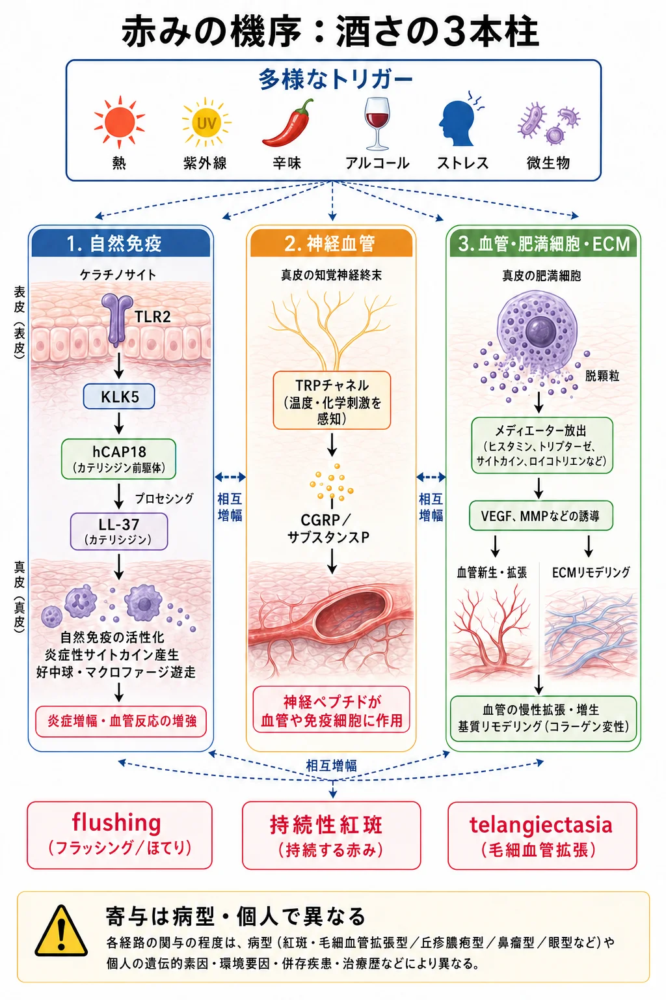
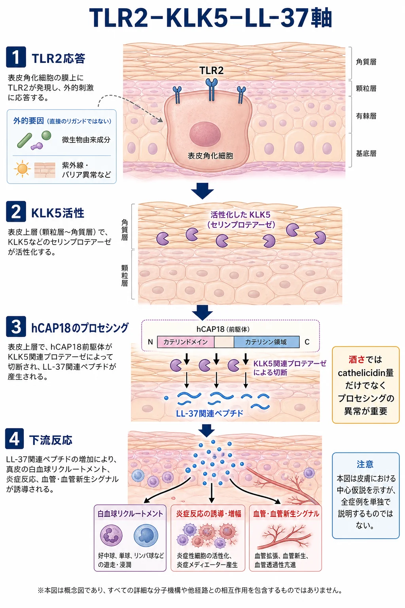
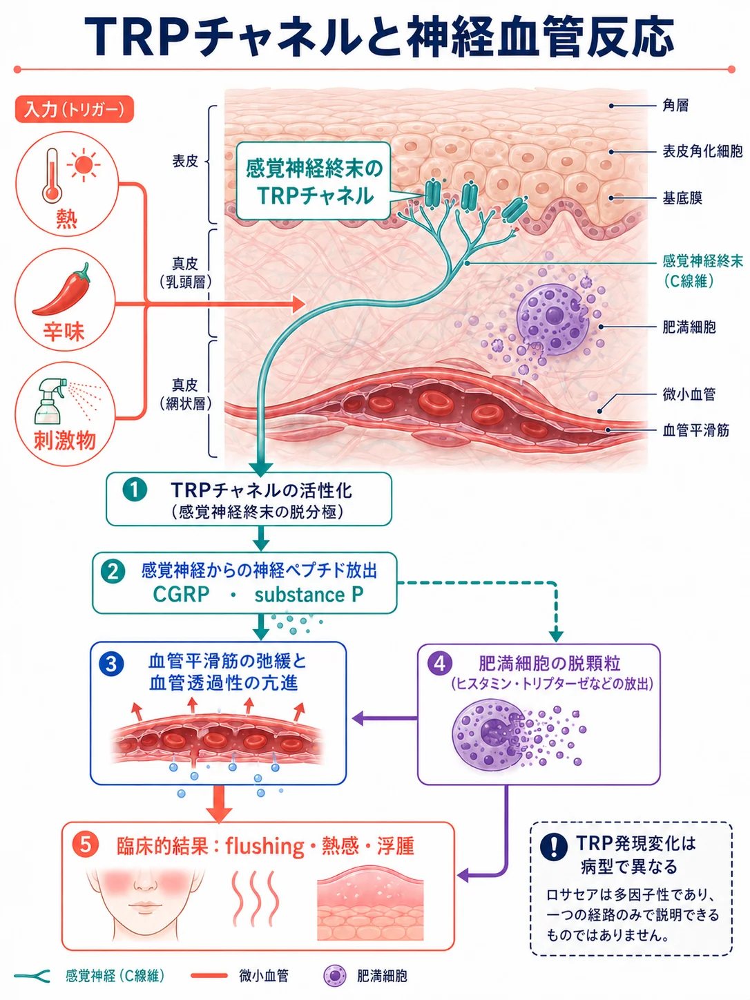
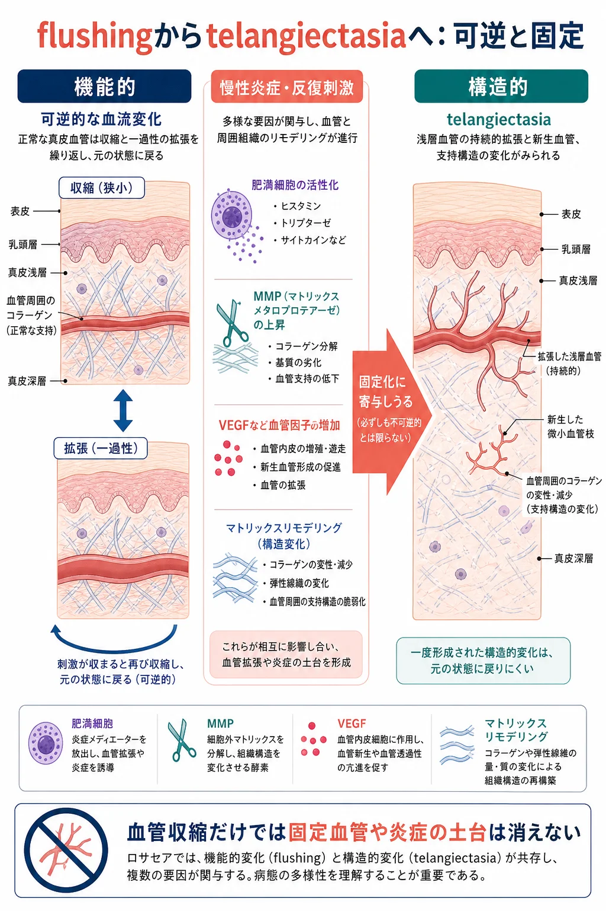
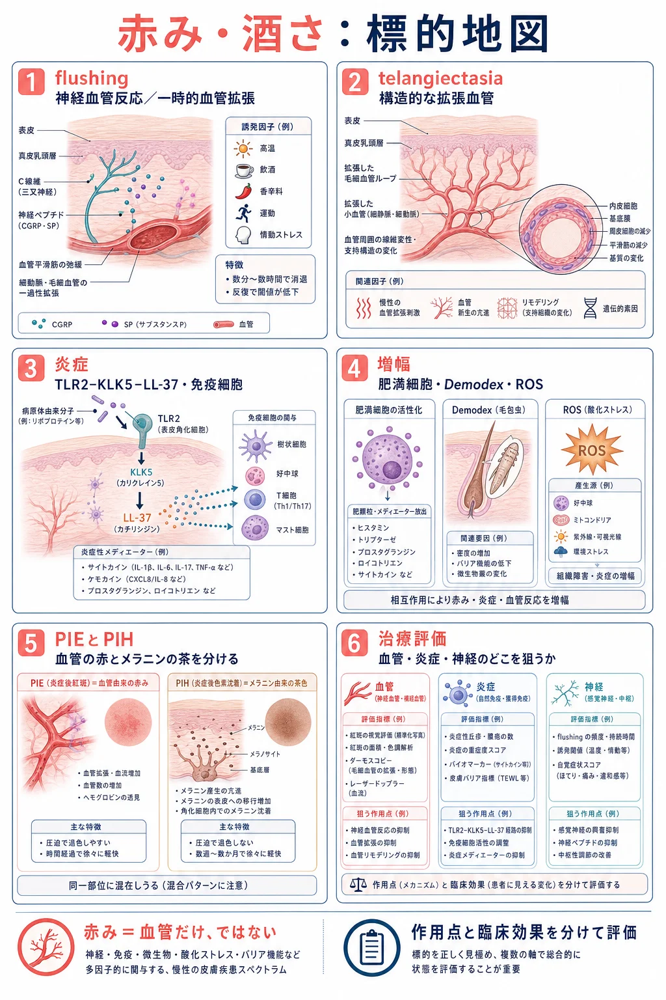

美容皮膚科 ／ 疾患・病態を細胞から理解する
酒さ神経血管反応・自然免疫・持続する炎症
公開 2026-10-06
酒さは、赤ら顔の相談でよく診る疾患です。顔の赤みが続き、ほてりやヒリヒリ感、丘疹・膿疱を伴うことがあり、治療に難渋することもあります。
酒さには、血管の拡張に加え、感覚神経が刺激に反応しやすくなることと、自然免疫による炎症が関わります。そのため、拡張した血管を治療しても、ほてりや丘疹・膿疱が残ることがあります。
紅斑の共通機序と炎症後紅斑は赤みの生化学、血管自体の構造と機能は血管と内皮で扱います。
この章の一言
酒さでは、感覚神経と自然免疫が刺激に過剰に反応し、血管の拡張と炎症を繰り返し起こします。 所見ごとに主に働く仕組みが違うため、治療も所見に合わせて選びます。
1 酒さでは、神経・免疫・血管の反応が重なる
温熱などの刺激を受けた感覚神経は神経ペプチドを放出し、血管を拡張させ、肥満細胞を活性化します。角化細胞や免疫細胞が作る炎症性メディエーターも、血管と神経に作用します。こうして神経血管反応と炎症が互いを強め、紅斑・灼熱感・丘疹・膿疱を生じます。炎症が繰り返されると、血管と周囲の細胞外基質（ECM）も変化し、赤みが持続します。各反応の寄与は、患者や病変によって異なります。

酒さの臨床像は、表現型（phenotype）の組み合わせとして整理されます。顔の中央の持続性紅斑と瘤腫性変化が診断的表現型、一過性紅潮・丘疹・膿疱・毛細血管拡張・眼症状が主要表現型、灼熱感・刺痛・浮腫・乾燥が副次的表現型です（Schallerら, 2020）。主な所見と、この章で扱う仕組みは次のように対応します。一つの所見に一つの機序が決まるわけではなく、複数の反応が重なります。
| 所見 | 主に働く仕組み |
|---|---|
| 一過性紅潮 | 温熱などに感覚神経が反応し、神経ペプチドが血管を拡張させる |
| 持続性紅斑 | 炎症が続き、血管の拡張と増加が残る |
| 毛細血管拡張 | 表在血管の拡張が持続し、血管網や周囲の支持組織にも変化がみられる |
| 丘疹・膿疱 | カテリシジンの増加と切断の変化に、好中球などの炎症細胞の集積が加わる |
| 灼熱感・刺痛・乾燥 | 感覚神経と免疫細胞が刺激に反応しやすく、表皮バリアも低下している |
免疫細胞が集まり、炎症性サイトカインが増える
酒さの皮膚では、マクロファージと肥満細胞が増え、Th1・Th17というヘルパーT細胞に関連する免疫反応も認められます。好中球は特に丘疹・膿疱を伴う病変で多くみられます（Buhlら, 2015）。
好中球などの炎症細胞が産生するROS（活性酸素）は、脂質やタンパク質を酸化して組織を傷つけ、炎症をさらに強めます。紫外線もROSを生じます（→ 酸化ストレスと抗酸化）。
詳しく読む：炎症性サイトカインとインフラマソーム
同じヒト病変の解析では、Th1・Th17の反応を担うIFN-γ・IL-17の増加も確認されています（Buhlら, 2015）。
別の患者研究では、IL-1β、IL-8、TNF-αと、NLRP3・カスパーゼ1をコードする遺伝子の発現増加も報告されています。NLRP3は、炎症性サイトカインIL-1βの成熟を促すタンパク質複合体「インフラマソーム」を構成する分子です。この研究では、ニキビダニの密度と炎症指標との間に単純な正比例は認められませんでした（Casasら, 2012）。
ニキビダニは、毛包でどう炎症に関わるのか
ニキビダニ（Demodex）は、毛包や皮脂腺に生息する小さなダニで、正常な皮膚にもいます。酒さでは密度が高いことが報告されています。炎症につながる経路として、ダニが皮脂腺細胞へ及ぼす作用と、ダニに関連する細菌への免疫反応が研究されています。
皮脂腺細胞への作用
生きたニキビダニとヒト皮脂腺細胞株を一緒に培養した実験では、ダニの数が多い条件でIL-8（CXCL8）の分泌が増えました。IL-8は、好中球を引き寄せるケモカインです。皮脂腺細胞は皮脂を作るだけでなく、炎症細胞を集める情報も出します（Laceyら, 2018）。
関連細菌の成分への反応
酒さ患者のニキビダニから、Bacillus oleroniusという細菌が分離されています。この菌のタンパク質をヒトの好中球に加えた実験では、好中球の移動と、炎症性サイトカインIL-8・TNF-αの産生が増えました。さらに、細胞外基質を分解する酵素MMP-9と、抗菌ペプチド・カテリシジンの前駆体hCAP18の放出も増えました。こうした好中球の反応が、毛包周囲の炎症や組織の損傷に関わると考えられます（Laceyら, 2007、O’Reillyら, 2012）。
これらは培養実験で示された作用です。患者ではダニの密度と炎症の強さは単純に比例せず、ダニや関連微生物への皮膚の反応も関わります（Casasら, 2012）。hCAP18の切断と炎症の関係は、LL-37の節で説明します。
バリア機能の低下が、刺激を受けやすさにつながる
酒さの皮膚、特に丘疹・膿疱を伴う病変では、角層の水分量が低下し、経皮水分蒸散量（TEWL）（皮膚から逃げる水分の量）が増えています。患者皮膚では、角層の細胞間脂質の形成や、細胞同士をつなぐデスモソーム・タイトジャンクションを構成する分子にも変化が認められます（Medgyesiら, 2020）。角層が水分を保てなくなり、洗浄や外用薬などの刺激も通しやすくなります。
バリア機能の低下は刺激閾値の低下とも関連し、乾燥やヒリヒリ感として現れます。炎症がバリアを損ない、刺激がさらに炎症を強める悪循環が考えられます（Darlenskiら, 2013）。乳酸を塗って刺痛を調べる試験では、酒さ患者32例中24例が陽性で、対照の32例中6例より多くみられました（Lonne-Rahmら, 1999）。刺激のある外用薬や施術を計画するときは、この反応しやすさが前提になります。角層の構造は表皮とターンオーバーを参照してください。
2 感染防御に使うLL-37が、酒さでは炎症にも関わる
皮膚のカテリシジン（cathelicidin）は、まず前駆体のhCAP18として作られます。hCAP18がタンパク質分解酵素によって切られると、LL-37などの抗菌ペプチドになります。LL-37は微生物への防御に働き、傷の再上皮化も促します。切断してLL-37を作ること自体は、正常な防御反応です（Murakamiら, 2002、Heilbornら, 2003）。
酒さの皮膚ではhCAP18の産生が増えています。さらに、微生物由来の成分などを感知する受容体TLR2の発現が高く、hCAP18を切る酵素KLK5の放出も促されます（Yamasakiら, 2011）。その結果、LL-37を含むペプチドの量が増えるだけでなく、切断後にできるペプチドの種類や割合も、健常皮膚とは異なります。こうしたペプチドは、免疫細胞の集積や肥満細胞の活性化、血管の反応を促して炎症を増幅し得ます（Yamasakiら, 2007、Mutoら, 2014）。
カテリシジンの量と切断後の構成が変わり、防御反応が炎症を増幅する方向へ傾きます。

詳しく読む：TLR2・KLK5・LL-37をどう調べたか
ヒト酒さ皮膚では、TLR2の発現増加、カテリシジンの増加、健常皮膚とは異なる切断産物が観察されています。培養角化細胞では、TLR2を刺激するとKLK5（kallikrein-5）の放出が増えました。
酒さ皮膚で見つかったペプチドをマウス皮膚に投与すると、酒さに似た炎症が生じました。ヒト病変での観察に加え、ペプチドが炎症を誘導することを示した実験です（Yamasakiら, 2007、Yamasakiら, 2011）。
3 神経血管反応が、ほてりと灼熱感を生む
温熱や辛味による一過性の紅潮（flushing）は、感覚神経を介した血管反応です。神経終末にあるTRPチャネルは、温度や化学物質を感知するイオンチャネルです。酒さ患者では、温かい飲み物による紅潮が、カフェインではなく温度によって起こることが示されています（Wilkin, 1981）。
刺激を受けた神経からは、CGRPやsubstance Pなどの神経ペプチドが放出されます。CGRPは血管を拡張させ、substance Pは血管透過性を高め、肥満細胞を活性化します。その結果、紅斑・熱感・浮腫が生じます。

酒さの皮膚では、TRPチャネルの発現そのものが変わっています。TRPV1の遺伝子発現はすべての病型で増え、真皮ではTRPV2〜4が肥満細胞・マクロファージ・T細胞などの免疫細胞に多く認められました（Sulkら, 2012）。神経に加えて免疫細胞も温度や刺激を感知しやすくなり、同じ刺激で神経血管反応と炎症が同時に起こりやすくなると考えられます。
詳しく読む：TRPチャネルと神経ペプチド
TRPV1は温熱やカプサイシン、TRPV4は温度・浸透圧・機械刺激などに反応します。Sulkらの研究では、TRPV1はmRNAの量だけを測定しており、どの細胞で増えているかは示されていません。免疫染色では、紅斑毛細血管拡張型でTRPV2・TRPV3、丘疹膿疱型でTRPV2（マクロファージ・肥満細胞）とTRPV4（CD4陽性T細胞・マクロファージ）、瘤腫型でTRPV3・TRPV4が真皮で増えていました。表皮の角化細胞のTRPV3・TRPV4には差がありませんでした（Sulkら, 2012）。
辛味成分のカプサイシンについては、酒さ皮膚でTRPV1とLL-37が増えていること、培養角化細胞をカプサイシンで刺激すると炎症性物質が増え、TRPV1の阻害薬で抑えられることが報告されています（Kimら, 2022）。
神経血管反応にはCGRP・substance Pのほか、PACAPやVIPなども関わります。各ペプチドが異なる受容体に作用し、血管や免疫細胞の反応を調節します。
4 炎症に伴い、血管と周囲のECMも変化する
肥満細胞（mast cell）は、神経ペプチドやカテリシジンによって活性化され、ヒスタミンやトリプターゼなどを放出して血管を拡張させ、周囲の炎症を強めます。肥満細胞を欠くマウスでは、LL-37を注射しても酒さに似た炎症が起こりませんでした（Mutoら, 2014）。
酒さ病変では、血管新生を促すVEGFと、血管・リンパ管のマーカーが増えています（Gomaaら, 2007）。肥満細胞は、LL-37の刺激で細胞外基質を分解する酵素マトリックスメタロプロテアーゼ（MMP）の一種MMP-9を作ります。ヒト酒さ皮膚でもMMP9の遺伝子発現が増えていました（Mutoら, 2014）。MMPが血管周囲のECMを分解すると、血管を支える組織が弱まり、既存血管の拡張や血管新生とともに紅斑が持続すると考えられています。
血管が増えたり拡張したりする変化は赤みとして、血管から血漿成分が漏れやすくなる変化はむくみとして現れ、両者は別々に起こり得ます。VEGFによる透過性亢進と新生血管の成熟は赤みの生化学で扱います。

5 薬剤による酒さ様皮膚炎
顔へのステロイドやタクロリムスの外用で、酒さに似た紅斑・丘疹などが誘発されることがあります。これが薬剤による酒さ様皮膚炎です。
ステロイド：局所免疫と皮膚構造への作用
ステロイドは局所の免疫反応を抑え、血管を収縮させます。持続的な外用では、皮膚構造やバリアにも影響します。
- 真皮のコラーゲン産生が減る。 線維芽細胞によるコラーゲン合成が抑えられ、皮膚萎縮に関わります。
- 角層のバリアの回復が遅れる。 表皮の脂質合成が抑えられ、バリアの回復や角層の細胞同士の結びつきに影響します。
- 中止後に反跳が生じることがある。 外用中は赤みが軽くなっていても、中止後に紅斑・灼熱感や丘疹・膿疱が強まることがあります。
コラーゲン合成の抑制はヒト皮膚で、バリア回復の低下と脂質合成の関係はヒト・動物の実験で確認されています（Nuutinenら, 2003・Kaoら, 2003）。
反跳の機序としては、外用中に収縮していた血管が中止後に拡張する反跳性血管拡張、効果の減弱（タキフィラキシー）、グルココルチコイド受容体の調節の変化などが挙げられていますが、いずれも仮説の段階です。ステロイド外用の中止に伴う皮膚症状の報告は多くが症例集積で、根拠の質は低いとされています（Hajarら, 2015・Tanら, 2021）。
患者研究では、通常の酒さと異なる菌叢が見られた症例や、病変からニキビダニが見つかった症例もあります。局所免疫の抑制に伴う微生物・ニキビダニの変化が発症に関わる可能性はありますが、因果関係は未確定です（Mochizukiら, 2025・Terakiら, 2012）。
タクロリムス：皮膚萎縮を伴わない誘発例
タクロリムス（プロトピック）はカルシニューリンを阻害し、T細胞の活性化を抑えます。ステロイドと同じ皮膚萎縮作用はありませんが、外用中に酒さ様皮膚炎が生じた症例が報告されています（Terakiら, 2012）。
一部の症例ではニキビダニが多く見つかっています。局所免疫の抑制に伴うダニの増殖、血管への作用、軟膏による密封が発症機序の候補ですが、いずれも仮説の段階です（Antilleら, 2004）。
JAK阻害薬外用と酒さ様皮膚炎
JAK阻害薬のデルゴシチニブ（コレクチム）外用中の酒さ様皮膚炎は、欧州医薬品庁の審査資料にも報告されています。薬剤との因果関係や発症頻度は、この報告だけでは確定できません（EMA審査資料, 2024）。
6 血管と炎症への治療を、臨床所見に対応させる
血管収縮薬は血管径を一時的に縮小させ、血管レーザー・IPLはヘモグロビンへの光吸収を利用して血管に熱作用を与えます。抗炎症薬は主に丘疹・膿疱などの炎症性病変を改善します。持続性紅斑、毛細血管拡張、炎症性病変の併存を評価し、それぞれに対応する治療を検討します。
| 主な作用点 | 治療の例 | どの変化を狙うか |
|---|---|---|
| 血管の収縮 | ブリモニジン・オキシメタゾリン外用 | 持続性の顔面紅斑を一時的に軽減する |
| 拡張した血管 | 血管レーザー・IPL | ヘモグロビンに光を吸収させ、血管に熱作用を与える（→ 血管レーザー、IPL） |
| 炎症性病変 | メトロニダゾール（ロゼックス）・アゼライン酸・イベルメクチン外用、ドキシサイクリン内服 | 主に丘疹・膿疱などの炎症性病変を改善する |
| 表皮バリア | 低刺激の洗浄・保湿 | 乾燥と刺激による増悪を減らし、外用治療を続けやすくする |
治療は所見に応じて選びます（Schallerら, 2020）。国内で酒さの効能をもつ外用薬はメトロニダゾールゲル（ロゼックスゲル、2022年に効能追加）です。イベルメクチン外用は国内未承認で、アゼライン酸は医薬品ではなく化粧品成分の扱いです。日本皮膚科学会のガイドラインは、国内の承認状況を踏まえて推奨を定めています（尋常性痤瘡・酒皶治療ガイドライン2023）。
スキンケア：刺激を減らし、合う製剤を選ぶ
洗浄や摩擦、化粧品の刺激で症状が増すことがあります。洗いすぎやこすり洗いを避け、刺激の少ない保湿剤と日焼け止めを使います。油分の多い製品でほてりや不快感が増す場合は、軽い乳液やジェルなどへ変更します。ドイツのガイドラインでも、油分の少ない、水を主体とする乳化製剤が勧められています（S2kガイドライン, 2022）。
丘疹・膿疱に使う外用薬は、何に働くのか
イベルメクチン：抗寄生虫薬
イベルメクチン（ivermectin）は、ダニや線虫などに作用する抗寄生虫薬です。疥癬などには内服薬が使われますが、酒さでは外用クリームを丘疹・膿疱の治療に使います。
酒さ患者では、外用後にニキビダニの密度と皮膚のLL-37などの炎症関連指標が低下しました。培養角化細胞や再構成皮膚でも、KLK5・カテリシジンと炎症性物質の産生を抑える作用が報告されています。ダニへの作用と抗炎症作用の両方が示唆されますが、患者での各作用の寄与は未確定です（Schallerら, 2017・Thibaut de Ménonvilleら, 2017）。丘疹・膿疱への効果は基剤対照試験でも確認されています（Steinら, 2014）。
メトロニダゾール：抗原虫・抗菌薬
メトロニダゾール（metronidazole）は、原虫や嫌気性菌に作用する抗原虫・抗菌薬です。ロゼックスゲル0.75％は、この成分を含む外用剤で、日本では酒さに使われます（PMDA審査資料）。
酒さへの効果には抗炎症作用が関わると考えられています。ヒト好中球を用いた実験では、活性酸素を直接消去する作用よりも、好中球による活性酸素の産生を抑える作用が示されました（Miyachiら, 1986）。国内の基剤対照試験でも、丘疹・膿疱と紅斑の改善が確認されています（Miyachiら, 2022）。
アゼライン酸：抗炎症作用を持つジカルボン酸
アゼライン酸（azelaic acid）はジカルボン酸の一種で、ざ瘡や酒さの外用治療に使われます。15％ゲルで治療した酒さ患者の皮膚では、KLK5とカテリシジンの発現が低下しており、カテリシジンを介した炎症の増幅を抑えることが示唆されます（Codaら, 2013）。15％ゲルの基剤対照試験では、丘疹・膿疱と紅斑の改善が確認されています（Thiboutotら, 2003）。
詳しく読む：アゼライン酸とPPARγ
PPARγは、脂質代謝や炎症に関わる遺伝子の発現を調節する核内受容体です。培養したヒト角化細胞では、アゼライン酸がPPARγの発現と転写活性を高め、UVBで誘導されるIL-1β・IL-6・TNF-αの産生を抑えました。PPARγ阻害薬でこの抑制効果が失われたことから、この実験ではPPARγの関与が支持されます。同時に、炎症関連の転写因子NF-κBの核への移行と、p38のリン酸化も抑えられています（Mastrofrancescoら, 2010）。細胞実験での知見で、患者の改善にどれだけ寄与するかは未確定です。
これらの外用薬は主に炎症性病変を改善します。炎症に伴う赤みも軽くなり得ますが、拡張した毛細血管を取り除く作用はありません。
ドキシサイクリンは、炎症細胞や酵素の働きも抑える
ドキシサイクリン（doxycycline）は、テトラサイクリン系の抗菌薬です。抗菌作用に加えて、MMPの活性を抑える作用が実験で報告されています（Kanadaら, 2012）。同じテトラサイクリン系のミノサイクリンでは、ヒト好中球の活性酸素産生（呼吸バースト）への作用が報告されています（Parentiら, 2017）。
培養角化細胞では、MMPの阻害に伴ってKLKの活性化と、hCAP18からLL-37への切断も減りました。組織の分解と、カテリシジンを介した炎症の増幅を抑えることが、抗炎症作用の候補です。各作用が患者の改善に寄与する割合は未確定です。
ほかに使われる内服薬
| 薬の種類 | 使用される場面 |
|---|---|
| マクロライド系（アジスロマイシン・クラリスロマイシン・エリスロマイシンなど） | テトラサイクリン系を使いにくい場合などに、丘疹・膿疱への選択肢となる |
| イソトレチノイン | 治療に反応しにくい、重症の酒さで検討される |
| β遮断薬（プロプラノロールなど） | flushingが主な問題となる一部の患者で検討される |
同じテトラサイクリン系のミノサイクリンも使われます。ただし、副作用を踏まえた位置づけはドキシサイクリンと異なり、英国のガイドラインでは他の選択肢がある場合は避ける方針です。これらの薬の選択は、主な所見と患者の状態に応じて考えます（英国皮膚科学会ガイドライン, 2021）。
この章の到達点
- 神経血管反応、カテリシジンの産生・切断、免疫細胞の反応が、血管拡張と炎症をどう強め合うかを説明できます。
- 表皮バリアの低下が、乾燥や刺激への敏感さにつながる仕組みを説明できます。
- ステロイドとタクロリムスによる酒さ様皮膚炎について、ステロイドの皮膚萎縮・バリアへの作用と、両薬で提案されている微生物・ニキビダニの関与を区別できます。
- 持続性紅斑・毛細血管拡張・炎症性病変のどれが主かに応じて、治療の作用点を選べます。
この章のまとめ

中核参考文献
- Yamasaki K, Di Nardo A, Bardan A, et al. Increased serine protease activity and cathelicidin promotes skin inflammation in rosacea. Nat Med. 2007;13(8):975-980. PMID: 17676051. DOI: 10.1038/nm1616.
- Yamasaki K, Kanada K, Macleod DT, et al. TLR2 expression is increased in rosacea and stimulates enhanced serine protease production by keratinocytes. J Invest Dermatol. 2011;131(3):688-697. PMID: 21107351. DOI: 10.1038/jid.2010.351.
- Sulk M, Seeliger S, Aubert J, et al. Distribution and expression of non-neuronal transient receptor potential (TRPV) ion channels in rosacea. J Invest Dermatol. 2012;132(4):1253-1262. PMID: 22189789. DOI: 10.1038/jid.2011.424.
- Schaller M, Almeida LMC, Bewley A, et al. Recommendations for rosacea diagnosis, classification and management: update from the global ROSacea COnsensus 2019 panel. Br J Dermatol. 2020;182(5):1269-1276. PMID: 31392722. DOI: 10.1111/bjd.18420.
- Muto Y, et al. Mast cells are key mediators of cathelicidin-initiated skin inflammation in rosacea. J Invest Dermatol. 2014;134(11):2728-2736. PMID: 24844861. DOI: 10.1038/jid.2014.222.
- Coda AB, Hata T, Miller J, et al. Cathelicidin, kallikrein 5, and serine protease activity is inhibited during treatment of rosacea with azelaic acid 15% gel. J Am Acad Dermatol. 2013;69(4):570-577. PMID: 23871720. DOI: 10.1016/j.jaad.2013.05.019.
- Lacey N, et al. Demodex mites modulate sebocyte immune reaction: possible role in the pathogenesis of rosacea. Br J Dermatol. 2018;179:420–430. PMID 29532463. DOI: 10.1111/bjd.16540.
- Lacey N, et al. Mite-related bacterial antigens stimulate inflammatory cells in rosacea. Br J Dermatol. 2007;157:474–481. PMID 17596156. DOI: 10.1111/j.1365-2133.2007.08028.x.
- O’Reilly N, et al. Demodex-associated bacterial proteins induce neutrophil activation. Br J Dermatol. 2012;166:753–760. PMID 22098186. DOI: 10.1111/j.1365-2133.2011.10746.x.